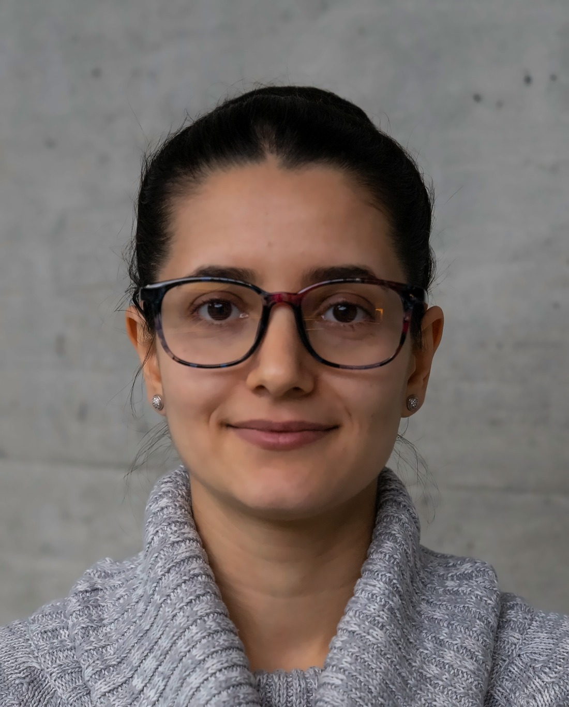

I build and validate machine-learning pipelines end to end; from data acquisition and signal preprocessing to modeling, experimentation, and rigorous evaluation. I worked mainly with speech and physiological signals, and also image, video, and radar data.

I'm a machine learning and signal-processing specialist with 7+ years building ML pipelines end to end; data acquisition and curation, signal preprocessing, modeling, experimentation, and rigorous evaluation and validation. I've applied this mainly to speech and physiological signals, and also to image, video, and radar data, on problems ranging from estimating physiological signals from speech to face biometrics and the automated evaluation of generative speech. I work in Python with PyTorch, TensorFlow, and scikit-learn, ship with Docker, and have created specialized speech, physiological, and face/voice datasets. Alongside the modeling, I've mentored Master's students and review for IEEE/ACM Transactions on Audio, Speech, and Language Processing.
Benchmarked 9 text-to-speech voices across 15 domains into a single quality score from intelligibility, audio quality, speaker similarity, and synthesis success, cutting reliance on manual listening tests. Validated against a human ranking study, with automatic and human rankings agreeing on the top-3 and bottom-2 voices.
Pioneered deep-learning models that estimate breathing signals directly from raw speech waveforms in TensorFlow, achieving a 25% reduction in input lag compared with spectral-based models.
Designed and implemented algorithms for noncontact human detection and vital-sign monitoring from radar signals.
Developed models for COVID-19 detection, emotion recognition, heart-rate estimation, and hypoglycemia detection in diabetic patients, using speech signals with both data-driven and hand-crafted features in PyTorch and scikit-learn.
Investigated presentation attacks on CNN-based face-recognition systems, including makeup-induced spoofing, and collected and curated two large face-biometric datasets from 100+ participants, including acquisition protocol design and attack generation.
At the Lemanic Life Science Hackathon at EPFL, built a prototype with a multidisciplinary team to help clinicians assess children's reading by automatically identifying the word a child attempts to say and whether it was pronounced correctly. Idea to working prototype in three days.
Full list — 15+ publications, ~600 citations, h-index 9 — on Google Scholar →
I'm open to machine-learning and AI scientist roles. The fastest way to reach me is email.